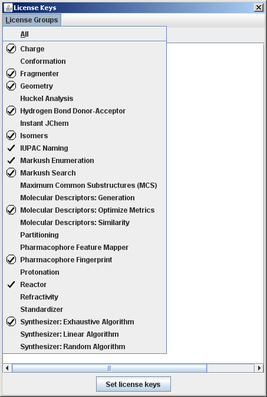
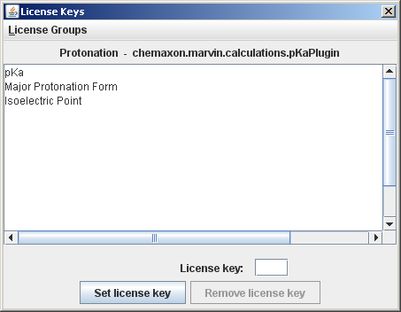

Entering license keys for JChem Base, JChem Cartridge for Oracle, and JKlustor is described in
JChem's Administration Guide.
Entering license keys using Instant JChem is described in the
Instant JChem User guide.
A license key for any other software module of ChemAxon is an 8-character string that enables the user to use the application that require a license key without restriction. These applications run in demo mode if the user does not have the license key. This means that you can run these tools for a restricted number of molecules.
There is a license handler tool that lists licensed applications and provides a graphical interface
to set license keys. The tool can run as a command line
application, a graphical standalone application and is also available from the
Marvin GUI. The standalone versions can be accessed
through the license shell script (Unix) or license.bat
batch file (Windows).
Prepare the usage of the license script or batch file
as described in Preparing the Usage of JChem
Batch Files and Shell Scripts.
Type
license -hfor the list of command line options.
Type
licenseto invoke the graphical version.
The same tool can be accessed from the Edit > Preferences > Licenses tab of the Marvin GUI.
|  |
|  |
Note: License handler tool is available in
Marvin 4.1/JChem 3.2 and above. In preceding versions license keys have to be set by
editing the licenses.dat file, as described below.
License keys of Marvin's plugins can be set using the the Marvin GUI: invoke the graphical license handler from the corresponding plugin options pane (e.g. for the logD plugin: Tools -> Partitioning -> logD).
The license key for MarvinSpace can be set in MarvinSpace: invoke the graphical license handler from the "Others" tab of the Options pane (Display -> Options...). As of Marvin 4.1.5 MarvinSpace does not require separate license key.
License keys are listed in the .chemaxon/licenses.dat (Unix)
or chemaxon\licenses.dat (Windows) file under the user's home directory.
License keys are automatically saved in this file when they are set
by the license handler tool. On Unix systems - including most distributions of Linux -
the home directory for each user takes the form /home/username
(where username is the name of the user account).
In newer versions of Microsoft Windows, based on the multi-user Windows NT,
each user has a home directory which by default is located at
C:\Documents and Settings\username when using the English language
version of the OS (with username again replaced by the particular
user's login name).
In case of a web application (e.g. JSP pages) the license file should be placed
on the server side, the user home is the home directory of the user that runs
(owns) the web server.
If the web server runs as a system service under Windows the user home can be
a system user home, which is sometimes difficult to determine.
(It can be "c:\" or "c:\windows\system32\config\systemprofile\", etc.)
To make setting the license keys easier, we provide a web-based (JSP)
utility: <jchem_home>/util/license/setlicense.jsp.
Load this page in a browser from your web server, and you can
upload a specified license file from the client computer
to the appropriate directory and file name on the server.
However, the license file should be placed on the client side in case of Marvin applets or web applications having embedded Marvin applets to access the plugin calculations.
Example license key entries in the license file:
chemaxon.marvin.calculations.XYZPlugin=56TYAD12 chemaxon.reaction.XYZReactionHandler=ABCD1234
Please contact ChemAxon if you need a license key.